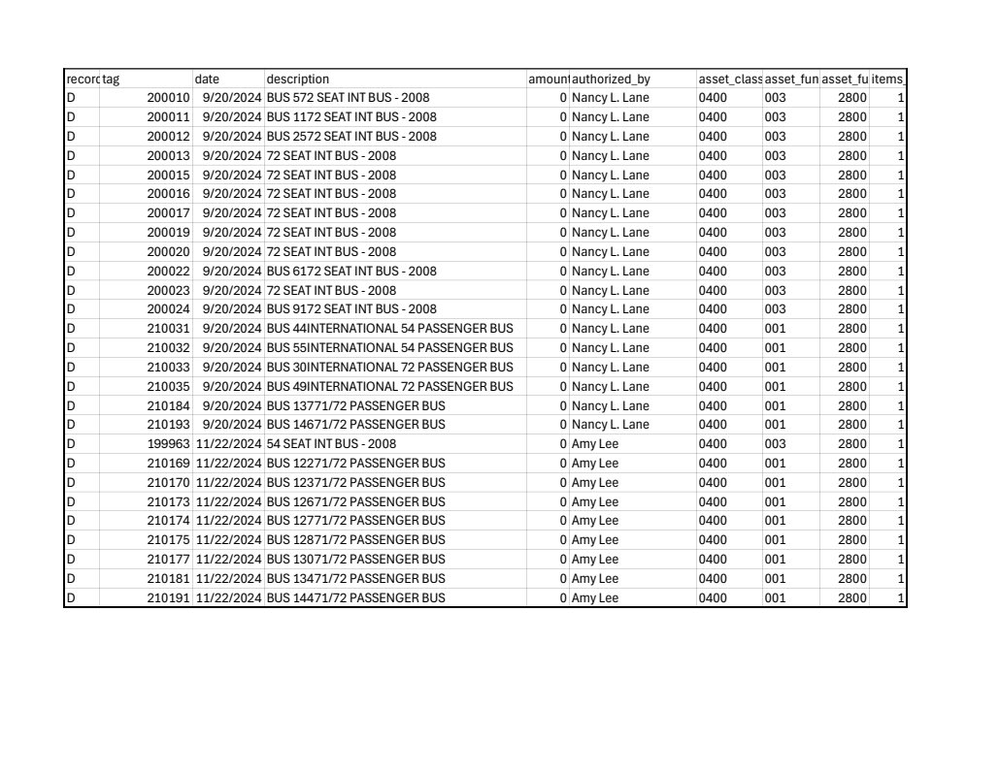

Source exhibit
Bus Disposition Records.pdf
Source SHA-256: 422f7e661aa739df7d244fcfd14a24b9cc64c9fc49a84f6dde93ba85d73b883f
Page 1

Extracted text · page 1
record_idtag date description amount_receivedauthorized_by asset_classasset_fundasset_functionitems_in_lot D 2000109/20/2024BUS 572 SEAT INT BUS - 2008 0 Nancy L. Lane 0400 003 2800 1 D 2000119/20/2024BUS 1172 SEAT INT BUS - 2008 0 Nancy L. Lane 0400 003 2800 1 D 2000129/20/2024BUS 2572 SEAT INT BUS - 2008 0 Nancy L. Lane 0400 003 2800 1 D 2000139/20/202472 SEAT INT BUS - 2008 0 Nancy L. Lane 0400 003 2800 1 D 2000159/20/202472 SEAT INT BUS - 2008 0 Nancy L. Lane 0400 003 2800 1 D 2000169/20/202472 SEAT INT BUS - 2008 0 Nancy L. Lane 0400 003 2800 1 D 2000179/20/202472 SEAT INT BUS - 2008 0 Nancy L. Lane 0400 003 2800 1 D 2000199/20/202472 SEAT INT BUS - 2008 0 Nancy L. Lane 0400 003 2800 1 D 2000209/20/202472 SEAT INT BUS - 2008 0 Nancy L. Lane 0400 003 2800 1 D 2000229/20/2024BUS 6172 SEAT INT BUS - 2008 0 Nancy L. Lane 0400 003 2800 1 D 2000239/20/202472 SEAT INT BUS - 2008 0 Nancy L. Lane 0400 003 2800 1 D 2000249/20/2024BUS 9172 SEAT INT BUS - 2008 0 Nancy L. Lane 0400 003 2800 1 D 2100319/20/2024BUS 44INTERNATIONAL 54 PASSENGER BUS0 Nancy L. Lane 0400 001 2800 1 D 2100329/20/2024BUS 55INTERNATIONAL 54 PASSENGER BUS0 Nancy L. Lane 0400 001 2800 1 D 2100339/20/2024BUS 30INTERNATIONAL 72 PASSENGER BUS0 Nancy L. Lane 0400 001 2800 1 D 2100359/20/2024BUS 49INTERNATIONAL 72 PASSENGER BUS0 Nancy L. Lane 0400 001 2800 1 D 2101849/20/2024BUS 13771/72 PASSENGER BUS 0 Nancy L. Lane 0400 001 2800 1 D 2101939/20/2024BUS 14671/72 PASSENGER BUS 0 Nancy L. Lane 0400 001 2800 1 D 19996311/22/202454 SEAT INT BUS - 2008 0 Amy Lee 0400 003 2800 1 D 21016911/22/2024BUS 12271/72 PASSENGER BUS 0 Amy Lee 0400 001 2800 1 D 21017011/22/2024BUS 12371/72 PASSENGER BUS 0 Amy Lee 0400 001 2800 1 D 21017311/22/2024BUS 12671/72 PASSENGER BUS 0 Amy Lee 0400 001 2800 1 D 21017411/22/2024BUS 12771/72 PASSENGER BUS 0 Amy Lee 0400 001 2800 1 D 21017511/22/2024BUS 12871/72 PASSENGER BUS 0 Amy Lee 0400 001 2800 1 D 21017711/22/2024BUS 13071/72 PASSENGER BUS 0 Amy Lee 0400 001 2800 1 D 21018111/22/2024BUS 13471/72 PASSENGER BUS 0 Amy Lee 0400 001 2800 1 D 21019111/22/2024BUS 14471/72 PASSENGER BUS 0 Amy Lee 0400 001 2800 1